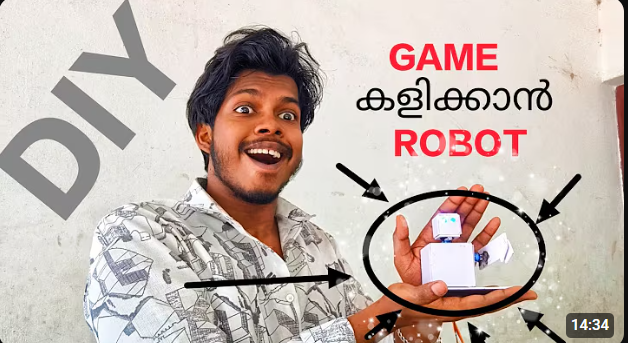
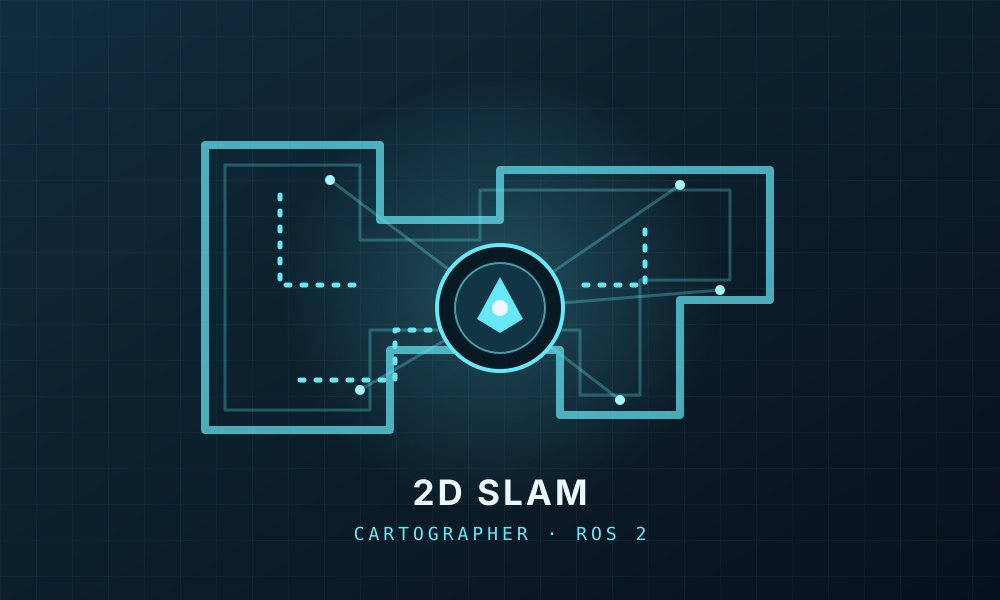
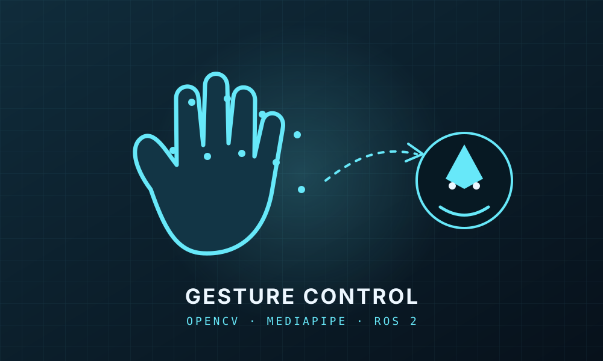
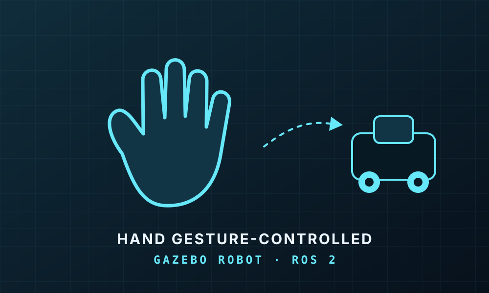
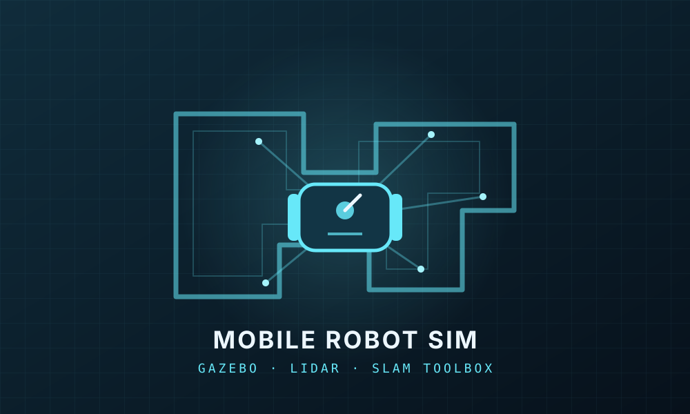

1. About Me_
I am a Robotics and Automation Engineering graduate passionate about developing intelligent robotic systems that interact with the real world.
I have knowledge of ROS 2, Robot Simulation, Computer Vision, Embedded Systems, and Automation. I enjoy exploring how software, sensors, and control systems work together to build practical robotic applications.
My areas of interest include Mobile Robotics, Autonomous Systems, Robot Integration, and Intelligent Automation. I am continuously learning and developing my skills to contribute to innovative robotics solutions.
2. Projects_

Touchless Sanitizer System
Automated hygiene solution utilizing ultrasonic sensors and motor control for zero-contact dispensing.

Dino Game Bot
Hardware-level automation using light-dependent resistors to trigger physical jump mechanisms.

Google Cartographer 2D SLAM
Implemented 2D simultaneous localization and mapping with ROS 2 Humble, LiDAR, RViz2, TF frames, and occupancy grid map generation.

Hand Gesture-Controlled TurtleSim
Built a real-time hand gesture-controlled TurtleSim using OpenCV and MediaPipe to publish velocity commands through ROS 2.

Hand Gesture-Controlled Gazebo Robot
Built a vision-based ROS 2 interface that converts real-time hand gestures into velocity commands for a mobile robot in Gazebo.

ROS 2 Mobile Robot Simulation Using SLAM Toolbox
Built and simulated a differential-drive robot with URDF/Xacro, Gazebo Classic, LiDAR, and SLAM Toolbox mapping.
3. Experience_
Software Developer
Professional software development role focusing on AI and internet studies applications.
Python Full Stack Developer
Full stack development using Python and related technologies.
4. Skills_
- ROS 2
- C++
- Python
- Rviz
- Gazebo
- SLAM
- Nav2
- OpenCV
- Microcontrollers
5. Education_
PG Diploma in ROS2
iHub School of Learning, Edappally, Kerala
Currently Pursuing
Bachelor of Technology
Rajadhani Institute of Engineering and Technology, Attingal
KTU - Robotics and Automation Engineering
Higher Secondary Education
Thadikad HSS, Anchal, Kollam
Board of Higher Secondary Examinations – Science
Secondary Education
St. John's School, Anchal, Kollam
Central Board of Secondary Education
6. Contact_
I’m currently looking for new opportunities in
Robotics and Autonomy.
Whether you have a question or just want to discuss a potential project, my inbox is always open!
LinkedIn:
linkedin.com/in/akhil-r-anand
Location: Kollam, Kerala, India